این تصاویر فقط پیشنمایش هستند. نوشته کمرنگ انگلیسی بالای هر تصویر مربوط به ابزار تولید پیشنمایش است و در فایل پاورپوینت وجود ندارد. فاصلهگذاری متن در PowerPoint ممکن است کمی متفاوت باشد.
اسلاید 1 از 15
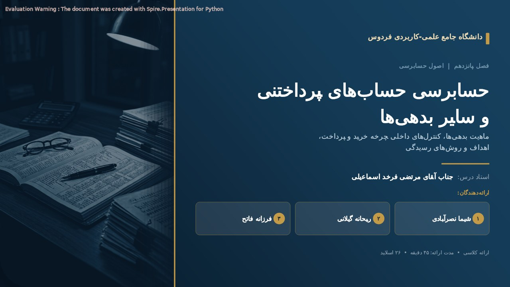
یادداشت ارائهدهنده
■ پیام کلیدی اسلاید این ارائه، فصل پانزدهم کتاب اصول حسابرسی را با منطق «از مفهوم به کاربرگ» بازسازی میکند: نخست ماهیت بدهیها و علت حساسیت آنها، سپس کنترل داخلی چرخه خرید و پرداخت، و در پایان اهداف و روشهای رسیدگی. ■ متن پیشنهادی برای ارائه شفاهی «با سلام و احترام. موضوع ارائه ما فصل پانزدهم کتاب اصول حسابرسی است: حسابرسی حسابهای پرداختنی و سایر بدهیها. در این ارائه تلاش میکنیم به سه پرسش پاسخ دهیم: حسابهای پرداختنی چه ماهیتی دارند و چرا برای حسابرس مهماند؟ کنترل داخلی مطلوب در چرخه خرید و پرداخت چگونه است؟ و حسابرس با چه روشهایی اطمینان مییابد که بدهیها کامل، معتبر و درست طبقهبندی شدهاند؟» ■ مدیریت زمان حدود ۴۵ ثانیه؛ فرصت مناسبی است برای معرفی تیم و ایجاد انگیزه. از خواندن عین عنوان خودداری کنید و مستقیماً وارد پرسشهای سهگانه شوید. ■ پیوند با اسلاید بعد بلافاصله بگویید: «برای اینکه بدانیم در ۴۵ دقیقه کجا میرویم، نقشه راه ارائه را مرور میکنیم.»
اسلاید 2 از 15
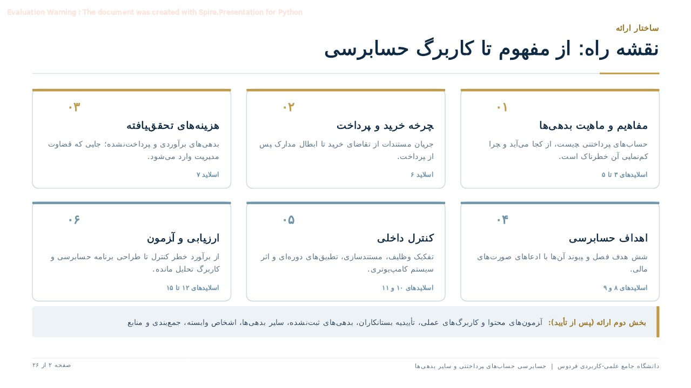
یادداشت ارائهدهنده
■ پیام کلیدی اسلاید ارائه یک مسیر خطی دارد: ابتدا «چیستی» بدهیها، بعد «کنترل» و سپس «رسیدگی». این ترتیب دقیقاً همان منطق فصل است و به دانشجو کمک میکند جای هر ابزار حسابرسی را در زنجیره بشناسد. ■ توضیح شفاهی پیشنهادی «شش ایستگاه داریم. در بخش نخست، سه ایستگاه اول را کامل میکنیم: مفاهیم، چرخه خرید، و هزینههای تحققیافته. سپس اهداف حسابرسی را استخراج میکنیم. بخش پنجم به کنترل داخلی میپردازد؛ چون برآورد خطر کنترل، تعیینکننده حجم آزمونهای محتواست. و در پایان، برنامه حسابرسی و نخستین کاربرگ حرفهای را میبینیم.» ■ نکته آموزشی تأکید کنید که «کنترل داخلی» و «آزمون محتوا» دو مسیر موازی نیستند؛ کنترل ضعیف، حجم آزمون محتوا را افزایش میدهد. همین جمله، پل ارتباطی اسلایدهای ۱۰ تا ۱۵ است. ■ پرسش کلاسی (اختیاری) «به نظر شما اگر شرکتی سیستم کنترل داخلی بسیار قوی داشته باشد، حسابرس میتواند آزمونهای محتوا را حذف کند؟» پاسخ: خیر؛ کاهش میدهد اما حذف نمیکند، زیرا خطر ذاتی و خطر تقلب مدیریت همیشه باقی است.
اسلاید 3 از 15
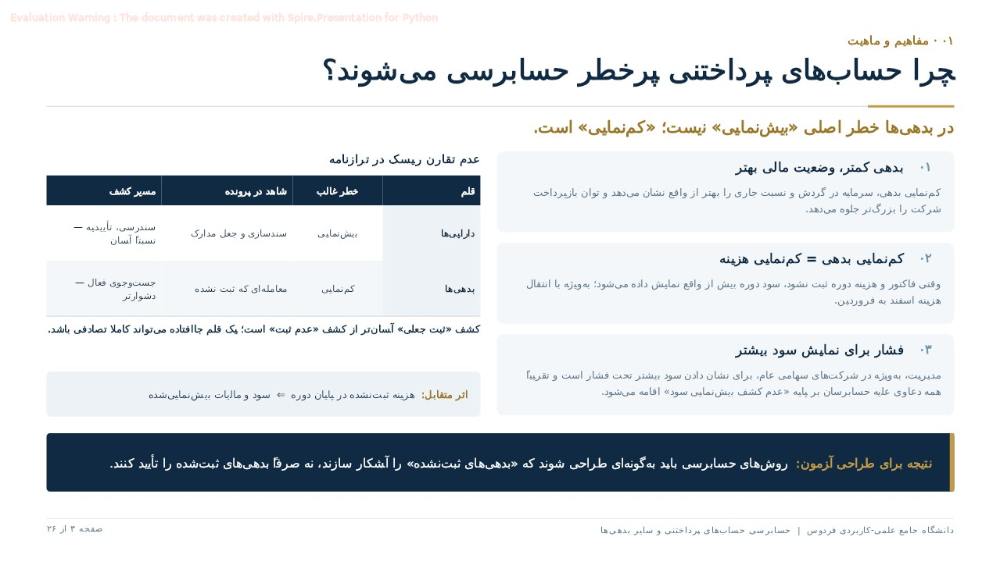
یادداشت ارائهدهنده
■ پیام کلیدی اسلاید این اسلاید، «چرایی» کل فصل است. اگر دانشجو بپذیرد که خطر اصلی در بدهیها کمنمایی است، آنگاه اهمیت جستوجوی بدهیهای ثبتنشده، بررسی پرداختهای پس از تاریخ ترازنامه و تأییدیه را میفهمد. ■ توضیح شفاهی پیشنهادی «کتاب در همان صفحه نخست بحث، سه استدلال میآورد. اول: کمنمایی بدهی، وضعیت مالی را بهتر از واقع نشان میدهد؛ بدهی کمتر یعنی سرمایه در گردش و نسبت جاری بزرگتر. دوم: کمنمایی بدهی معمولاً با کمنمایی هزینه همراه است؛ مثال کتاب، تأخیر در ثبت هزینههای اسفند به فروردین است. سوم: مدیریت شرکتها، بهویژه شرکتهای سهامی عام، به نوعی تحت فشارند که هر سال سود بیشتری نشان دهند؛ و تقریباً همه دعاوی علیه حسابرسان بر پایه عدم کشف بیشنمایی سود اقامه میشود.» ■ نکته تخصصی روی تفاوت «کشف ثبت جعلی» و «کشف عدم ثبت» تأکید کنید. برای ثبت جعلی، سندی در پرونده هست که میتوان آن را بازبینی کرد؛ اما برای قلمی که ثبت نشده، هیچ سندی در دفاتر نیست و حسابرس باید فعالانه آن را «جستوجو» کند. ■ پرسش و پاسخ کلاسی بپرسید: «چرا حسابرس در حسابهای پرداختنی بیشتر نگران کمنمایی بدهیهاست؟» پاسخ پیشنهادی: چون کمنمایی بدهی همزمان سود را بیشنمایی میکند، برخلاف بیشنمایی بدهی که سود را محافظهکارانهتر نشان میدهد و در سنجش سوداوری، خطر کمتری برای استفادهکنندگان دارد. ■ پیوند با اسلاید بعد «حالا که اهمیت موضوع روشن شد، ببینیم این بدهیها از کجا میآیند.»
اسلاید 4 از 15

یادداشت ارائهدهنده
■ پیام کلیدی اسلاید «حسابهای پرداختنی» یک سرفصلعام نیست؛ تعریف مشخصی دارد: بدهی ناشی از خرید کالا و خدمات در جریان عادی تجارت. هر بدهیای که از تأمین مالی بیاید، جای دیگری در ترازنامه دارد. ■ توضیح شفاهی پیشنهادی «کتاب در آغاز فصل میگوید بدهیهای ناشی از خرید کالا و خدمات در جریان عادی تجارت را حسابهای پرداختنی مینامیم. معاملات متداولی که به ایجاد آن میانجامد شامل خرید نسیه کالا، مواد اولیه، داراییهای ثابت و ارائه اداری است. منبع دیگر، دریافت خدمات است؛ مثل خدمات حسابداری، حقوقی، تبلیغاتی و تعمیراتی.» سپس به استثناها بپردازید: «بدهیهای ناشی از دریافت تسهیلات — وام، اوراق قرضه، اسناد پرداختنی، قراردادهای اقساطی — بدهیهای بهرهبردار یا تأمین مالی هستند و نباید در سرفصل حسابهای پرداختنی طبقهبندی شوند.» ■ نکته آموزشی توضیح دهید چرا این تفکیک مهم است: صورتهای مالی باید خوانا باشند؛ اگر بدهی تجاری با وام مخلوط شود، تحلیلگر نمیتواند چرخه عملیاتی را از ساختار سرمایه تفکیک کند. استاندارد حسابداری ایران شماره ۱ (ارائه صورتهای مالی) نیز بر طبقهبندی مناسب اقلام تأکید دارد. ■ پرسش کلاس «خرید یک دستگاه تولیدی با پرداخت سهماهه، حساب پرداختنی است یا بدهی بلندمدت؟» پاسخ: اگر سررسید آن در چرخه عملیاتی/یک سال باشد، بدهی جاری است و از نظر ماهیت خرید، در حسابهای پرداختنی ثبت میشود؛ اما در یادداشتهای همراه و تحلیل نسبتها باید ماهیت سرمایهای آن لحاظ شود.
اسلاید 5 از 15

یادداشت ارائهدهنده
■ پیام کلیدی اسلاید دو سرفصل داریم که ماهیت، مدرک و خطر متفاوتی دارند؛ لذا روش رسیدگی آنها هم متفاوت است. این جدول، نقشه انتخاب روش حسابرسی است. ■ توضیح شفاهی پیشنهادی «بدهی تجاری از یک معامله خرید میآید و سه سند کلاسیک دارد: سفارش خرید، گزارش دریافت و فاکتور. چون طرف مقابل هم همین معامله را ثبت کرده، میتوان آن را تأیید کرد. اما بدهی غیرتجاری معمولاً از یک الزام قانونی یا محاسبه داخلی میآید: مالیات، بیمه، حقوق انباشته، سپرده مشتری. اینجا فاکتور و طرف مقابلِ صاحب دفتر وجود ندارد؛ باید محاسبه و مفروضات را آزمون کرد.» ■ نکته تخصصی روی ستون «خطر اصلی» توقف کنید: در بدهی تجاری، خطر غالب کمنمایی است؛ در بدهی غیرتجاری، خطر غالب «نبود ذخیره کافی» یا «طبقهبندی نادرست» است. این تفاوت، مستقیماً به انتخاب آزمون (سندرسی در برابر آزمون محاسبات) میرسد. ■ پیوند با کتاب فهرست پنجگانه پایین اسلاید، همان فهرست کتاب است: کسور قانونی (مالیات و بیمه)، مالیات فروش، حقوق و دستمزد مطالبهنشده، سپردههای مشتریان، و هزینههای تحققیافته پرداختنشده. در بخش دوم ارائه، هر یک جداگانه بررسی میشود. ■ پرسش کلاس «سپرده حسن انجام کار که از پیمانکار نگه داشتهایم، بدهی تجاری است؟» پاسخ: بدهی است، اما ماهیت آن «تعهد قراردادی/امانی» است و باید جدا از حسابهای پرداختنی و با افشای مناسب ارائه شود.
اسلاید 6 از 15
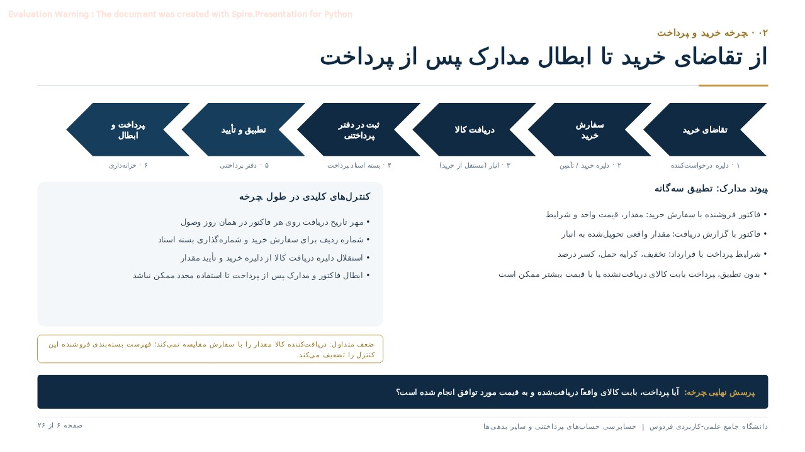
یادداشت ارائهدهنده
■ پیام کلیدی اسلاید چرخه خرید و پرداخت، یک زنجیره سندمحور است. هر حلقه، سندی تولید میکند و هر سند، کنترل خودش را دارد. حسابرس درک خود از این چرخه را معمولاً با فلوچارت (شکل ۱۵-۱ کتاب) مستند میکند. ■ توضیح شفاهی پیشنهادی (گامبهگام) «۱) دایره درخواستکننده تقاضای خرید را تنظیم و تصویب میکند. ۲) دایره خرید تأمینکننده، مقدار و قیمت را انتخاب میکند و سفارش خرید شمارهدار صادر میشود؛ نسخهها به انبار، دریافت و دفتر پرداختنی میرود. ۳) دایره دریافت — که باید مستقل از خرید باشد — کالا را با گزارش دریافت شمارهدار ثبت میکند. ۴) فاکتور فروشنده در دایره دفتر پرداختنی مهر تاریخ میخورد و در بسته اسناد پرداخت قرار میگیرد. ۵) بسته با سفارش و گزارش دریافت تطبیق و تأیید میشود. ۶) خزانهداری پرداخت میکند و مدارک ابطال میشود.» ■ نکته تخصصی از کتاب کتاب تصریح میکند که دایره دریافت، مقدار کالای دریافتی را با مقدار سفارش مقایسه نمیکند؛ ضمناً وجود فهرست بستهبندی همراه کالا، از قدرت کنترل داخلی میکاهد، چون میتواند جای شمارش واقعی را بگیرد. این دقیقاً همان نقطهای است که حسابرس باید دربارهاش شواهد جمع کند. ■ پرسش کلاس «اگر گزارش دریافت وجود نداشته باشد، چه خطری متوجه صورتهای مالی است؟» پاسخ: احتمال پرداخت بابت کالای دریافتنشده یا ثبت بدهی برای کالای برنگشته/مرجوعی؛ و در سطح بالاتر، امکان تبانی برای پرداختهای صوری.
اسلاید 7 از 15
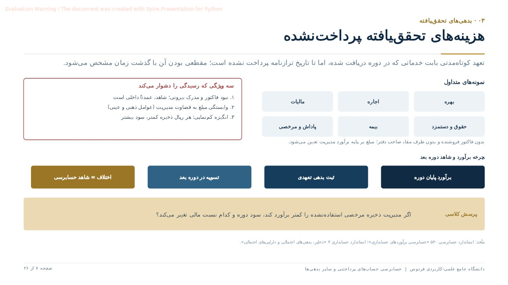
یادداشت ارائهدهنده
■ پیام کلیدی اسلاید هزینه تحققیافته پرداختنشده، «بدهی بیسند» است. حسابرسی آن، حسابرسیِ برآورد است، نه حسابرسیِ سند. ■ توضیح شفاهی پیشنهادی «این اقلام از خرید کالا و خدمات پشتوانه سندی دارند، اما بدهیهای تحققیافته — مثل حقوق، بهره، اجاره، مالیات و بیمه — معمولاً با گذشت زمان و بر پایه برآورد مدیریت در پایان سال شناسایی میشوند. کتاب تأکید میکند که این برآوردها در باره حقوق و مزایا، بازنشستگی، بیمه، بهره، اجاره، مالیات و اقلام مشابه ضروری است.» ■ نکته تخصصی سه ویژگی سمت راست را یکییکی توضیح دهید: نبود مدرک بیرونی، وابستگی به قضاوت، و انگیزه کمنمایی. سپس بگویید: «به همین دلیل حسابرس نمیتواند فقط سند بخواهد؛ باید مفروضات را بفهمد، محاسبات را آزمون کند و رفتار دورههای قبل را مبنا بگیرد.» ■ نکته استانداردها استاندارد حسابرسی ۵۴۰ حسابرس را مکلف میکند برآوردها را از دو زاویه ببیند: منطقی بودن روش و دادهها، و وجود سوگیری مدیریت. اختلاف تسویه دوره بعد (true-up) بهترین شاهد دورههای آتی است. ■ پاسخ پرسش کلاسی ذخیره کمتر مرخصی ← هزینه کمتر ← سود بیشتر؛ در ترازنامه، بدهیهای جاری و مجموع بدهیها کمتر میشود و نسبت جاری و سرمایه در گردش بهتر از واقع نشان داده میشود. ■ ارتباط با سایر مباحث این اسلاید پل ورود به بخش دوم است؛ جایی که پنج گام رسیدگی به هزینههای تحققیافته پرداختنشده و مثال کاربردی ارائه میشود.
اسلاید 8 از 15
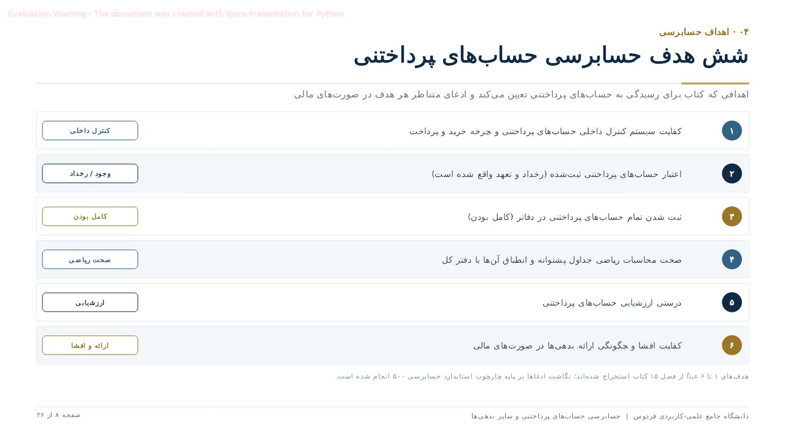
یادداشت ارائهدهنده
■ پیام کلیدی اسلاید شش هدف فصل، در واقع شش «پرسش حسابرسی» است. هر آزمون محتوا باید دستکم به یکی از این اهداف گره بخورد؛ آزمونی که به هدفی گره نخورد، اتلاف منابع است. ■ توضیح شفاهی پیشنهادی «کتاب در آغاز بحث رسیدگی، اهداف را چنین برمیشمارد: نخست، کفایت سیستم کنترل داخلی حسابهای پرداختنی و چرخه خرید و پرداختها. دوم، اعتبار حسابهای پرداختنی ثبتشده؛ یعنی بدهی واقعاً وجود دارد و تعهد ایجاد شده است. سوم، ثبت دفتری تمام حسابهای پرداختنی؛ یعنی کامل بودن. چهارم، صحت محاسبات ریاضی جداول پشتوانه و انطباق آنها با حسابهای دفتر کل. پنجم، درستی ارزشیابی. و ششم، کفایت افشا و چگونگی ارائه در صورتهای مالی.» ■ نکته تخصصی روی هدف سوم توقف کنید: «کامل بودن» همان هدفی است که به خطر کمنمایی پاسخ میدهد و به همین دلیل، دشوارترین بخش کار است. اهداف دوم و سوم در ظاهر شبیهاند اما در جهت مخالف: یکی میگوید ثبتشدهها واقعیاند، دیگری میگوید واقعیها همه ثبت شدهاند. ■ نگاشت با ادعاها توضیح دهید ادعای «وجود» با سندرسی و تأییدیه آزمون میشود؛ ادعای «کامل بودن» با روشهایی مثل بررسی پرداختهای بعد از تاریخ ترازنامه و جستوجوی بدهی ثبتنشده؛ ادعای «ارزشیابی» با آزمون برآوردها؛ و «ارائه و افشا» با بررسی طبقهبندی و یادداشتهای همراه. ■ پیوند با اسلاید بعد «در اسلاید بعد میبینیم هر یک از این اهداف، در برابر کدام خطر قرار میگیرد و با کدام روش پاسخ داده میشود.»
اسلاید 9 از 15
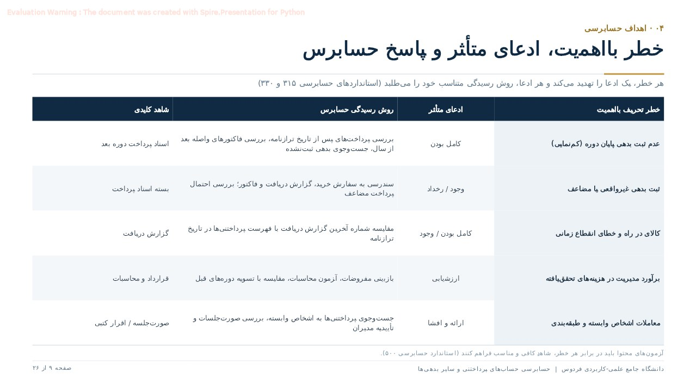
یادداشت ارائهدهنده
■ پیام کلیدی اسلاید این جدول، ستون فقرات برنامهریزی حسابرسی است: خطر ← ادعا ← روش ← شاهد. حسابرس از خطر شروع میکند، نه از فهرست مدارک. ■ توضیح شفاهی پیشنهادی «ردیف اول را با هم بخوانیم: خطر، عدم ثبت بدهی پایان دوره است؛ ادعایی که تهدید میشود، کامل بودن است؛ روش، بررسی پرداختهای پس از تاریخ ترازنامه و فاکتورهای واصله بعد از سال است؛ و شاهد کلیدی، اسناد پرداختی است که در دوره بعد انجام شده. همین منطق برای چهار ردیف دیگر تکرار میشود.» ■ نکته تخصصی دو نکته را برجسته کنید: نخست، در ردیف سوم (کالای در راه)، کتاب تأکید میکند که هر فاکتور خرید، همزمان بر موجودی کالا و هم بر حسابهای پرداختنی اثر میگذارد؛ پس خطای انقطاع زمانی، همزمان ترازنامه و سود را تحریف میکند. دوم، در ردیف پنجم، معاملات اشخاص وابسته ممکن است به قیمت غیربازاری انجام شود و افشای آن الزامی است. ■ پرسش و پاسخ کلاسی «آیا تأییدیه فروشندگان بهتنهایی برای اثبات کامل بودن بدهیها کافی است؟» پاسخ: خیر. تأییدیه، ماندههای ثبتشده را تأیید میکند؛ بدهی ثبتنشده در دفاتر نیست که تأیید شود. به همین دلیل کتاب تصریح میکند دریافت تأییدیه «یک روش اجباری نیست» و باید با جستوجوی بدهیهای ثبتنشده تکمیل شود. تأییدیه حساب با مانده صفر، یکی از راههای کشف بدهی ثبتنشده است. ■ پیوند با اسلاید بعد «اگر خطرها و روشها را شناختیم، باید ببینیم چه کنترلی در شرکت وجود دارد که این خطرها را کاهش میدهد.»
اسلاید 10 از 15

یادداشت ارائهدهنده
■ پیام کلیدی اسلاید کنترل داخلی در این چرخه بر دو پایه استوار است: تفکیک وظایف ناسازگار، و مستندسازی قابل ردیابی. اگر یکی نباشد، دیگری کافی نیست. ■ توضیح شفاهی پیشنهادی «چهار وظیفه نباید در یک دست جمع شوند: درخواست و خرید؛ دریافت و نگهداری کالا؛ تأیید فاکتور و ثبت بدهی؛ و پرداخت نقدی. کتاب بهصراحت میگوید وظیفه بازبینی و تصویب فاکتورهای خرید باید از وظیفه پرداخت نقدی جدا شود. برای جلوگیری از اشتباهات و تخلفات، پیش از تصویب پرداخت باید شواهد کتبی از بازبینی تمام جنبههای فاکتور فراهم شود؛ مسئول صدور چک باید مدارک را علامتگذاری کند تا استفاده دوباره از آنها ممکن نباشد.» ■ نکته تخصصی مستندسازی سه کارکرد دارد: قابل ردیابی میکند، از پرداخت مضاعف جلوگیری میکند، و به حسابرس امکان میدهد کنترل را آزمون کند. بدون سند، کنترل «ادعاشده» است نه «اجراشده». ■ نکته حرفهای کتاب کتاب تأکید میکند که خطا در حسابهای پرداختنی ممکن است پنهان بماند، چون بستانکاران معمولاً مدارک کاملی ندارند و اگر طلب خود را مطالبه نکنند، صاحبکار از خطا آگاه نمیشود. بنابراین «تکیه بر عدم مطالبه بستانکار» نشانه ضعف سیستم کنترل داخلی است، نه یک کنترل. ■ پرسش کلاس «اگر مدیر مالی هم فاکتور را تأیید کند و هم چک را امضا کند، چه خطری ایجاد میشود؟» پاسخ: امکان پرداخت بابت کالای دریافتنشده یا با مبلغ بیشتر، و امکان پنهان ماندن آن؛ چون کنترل متقابل وجود ندارد.
اسلاید 11 از 15
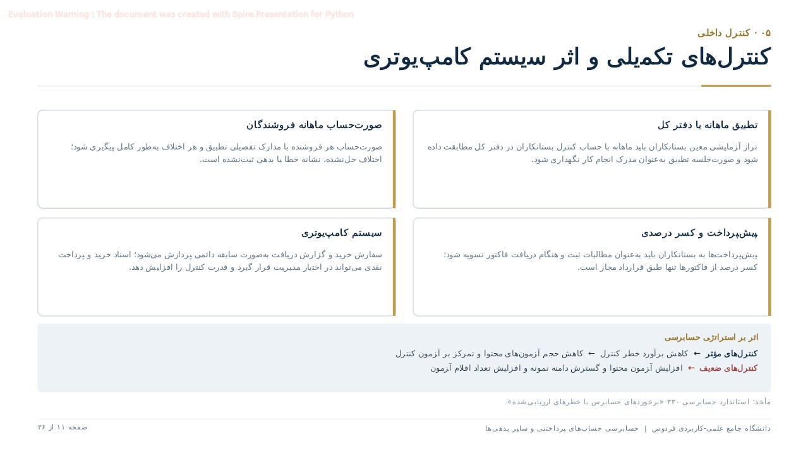
یادداشت ارائهدهنده
■ پیام کلیدی اسلاید کنترلهای تکمیلی، همان چیزهایی هستند که «صحیح بودن» ثبتها را در طول سال تضمین میکنند و پایه ارزیابی حسابرس از خطر کنترلاند. ■ توضیح شفاهی پیشنهادی «کتاب از یک انتظار مشخص شروع میکند: تطبیق ماهانه جزئیات حسابهای پرداختنی با حساب کنترل بستانکاران در دفتر کل، و نگهداری صورتجلسه تطبیق بهعنوان مدرک انجام کار. سپس صورتحساب ماهانه فروشندگان را میآورد: هر اختلاف باید بهطور کامل پیگیری شود. اگر شرکت این کار را نکند و کنترل داخلی ضعیف باشد، حسابرس خودش باید صورتحساب همه بستانکاران را بگیرد و مغایرتگیری کند تا از ثبت تمام بدهیهای شناختهشده مطمئن شود.» ■ نکته تخصصی درباره پیشپرداختها توضیح دهید: پیشپرداخت نباید بهعنوان مانده بدهی باقی بماند؛ باید بهعنوان مطالبه ثبت و هنگام دریافت فاکتور تسویه شود. همچنین در برخی صنایع، پرداختهای علیالحساب و کسر درصدی از فاکتورها رایج است و رعایت درصدهای مقرر قرارداد، خودش یک کنترل است. ■ نقش سیستم کامپیوتری کتاب تأکید میکند پردازش کامپیوتری معاملات خرید میتواند کنترلهای داخلی را افزایش دهد: سفارش خرید و گزارش دریافت بهصورت سابقه دائمی نگهداری میشود و اطلاعات بههنگام در اختیار مدیریت قرار میگیرد. ■ پیوند منطقی همینجا جمله کلیدی را بگویید: «هرچه کنترل مؤثرتر، آزمون محتوا کمتر و هدفمندتر.» سپس وارد اسلاید بعد شوید که چهار گام ارزیابی کنترل است.
اسلاید 12 از 15
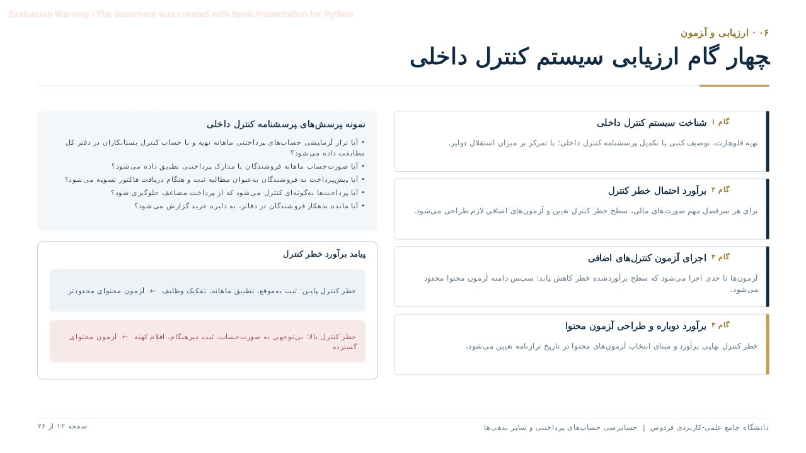
یادداشت ارائهدهنده
■ پیام کلیدی اسلاید ارزیابی کنترل داخلی یک فرایند چهارمرحلهای است، نه یک فرم. حسابرس ابتدا سیستم را میشناسد، بعد خطر را برآورد میکند، سپس کنترل را آزمون میکند و در پایان برآورد خود را بهروز میکند. ■ توضیح شفاهی پیشنهادی «کتاب میگوید یکی از راههای آشنایی با سیستم کنترل داخلی، تهیه نمودار یا استفاده از نمودارهای تهیهشده توسط صاحبکار است. در برخی موارد، حسابرس شرح نوشتهشده سیستم را ترجیح میدهد، چون شامل نکاتی مثل تشخیص میزان استقلال دوایر حسابهای پرداختنی است. حسابرسان میتوانند از پرسشنامه کنترل داخلی هم استفاده کنند.» ■ نکته تخصصی روی گام دوم و سوم تأکید کنید: برآورد خطر کنترل باید «به تفکیک سرفصل» باشد، نه یک عدد کلی برای شرکت. همچنین آزمون کنترل اضافی، هزینه دارد؛ کتاب میگوید حسابرس باید تعیین کند کدام آزمون اضافی، محتوا را محدود میکند و ارزش هزینهاش را دارد. ■ پرسشنامه نمونه پرسشهای سمت چپ را با صدای بلند بخوانید و بگویید: «به هر یک از این پرسشها پاسخ بله یا خیر داده میشود؛ پاسخ خیر، یک نقطه ضعف و بهمعنای افزایش خطر کنترل است.» ■ پرسش کلاس «اگر پاسخ همه پرسشها بله باشد، آیا حسابرس میتواند به کنترل تکیه کند؟» پاسخ: بله، به شرط آنکه آزمون کنترل، اجرای واقعی آن را تأیید کند؛ وجود رویه، دلیل اجرا نیست.
اسلاید 13 از 15
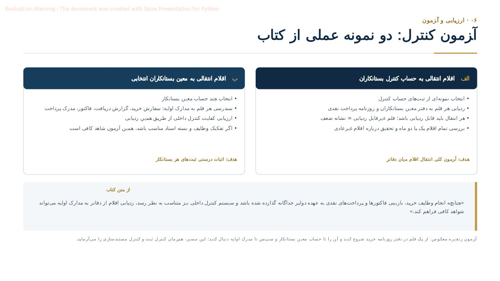
یادداشت ارائهدهنده
■ پیام کلیدی اسلاید آزمون کنترل، «آزمون اجرا» است نه «آزمون مانده». ما نمیخواهیم عدد بدهی را تأیید کنیم؛ میخواهیم ببینیم کنترل در طول دوره واقعاً کار کرده است یا نه. ■ توضیح شفاهی پیشنهادی «کتاب دو نمونه بسیار عملی میآورد. نمونه اول: اقلام انتقالی به حساب کنترل بستانکاران. حسابرس نمونهای از ثبتهای حساب کنترل انتخاب میکند و هر قلم را به دفتر معین بستانکاران و روزنامه پرداخت نقدی ردیابی میکند. هر انتقال باید قابل ردیابی باشد؛ اگر قلمی قابل ردیابی نباشد، نشانه ضعف کنترل است. نمونه دوم: اقلام انتقالی به حساب معین بستانکاران انتخابی؛ اینجا هر قلم به مدارک اولیه سندرسی میشود.» ■ نکته تخصصی جمله کلیدی کتاب را بخوانید: «چنانچه انجام وظایف خرید، بازبینی فاکتورها و پرداختهای نقدی به عهده دوایر جداگانه گذارده شده باشد و سیستم کنترل داخلی نیز خوب و متناسب به نظر رسد، ردیابی اقلام از دفاتر کل به مدارک اولیه میتواند تنها به میزانی که مشخص سازد روشهای کنترلی بهگونهای مناسب اعمال میشوند، شواهد کافی فراهم کند.» ■ نکته آموزشی تفاوت این دو آزمون را با یک مثال روشن کنید: آزمون «الف» میپرسد «آیا ثبتها به هم وصل هستند؟»؛ آزمون «ب» میپرسد «آیا ثبتها پشتوانه واقعی دارند؟». هر دو لازماند. ■ پرسش کلاس «اگر کنترل ضعیف باشد، آیا باز هم باید آزمون کنترل انجام دهیم؟» پاسخ: خیر؛ در این حالت حسابرس خطر کنترل را بالا برآورد میکند و تمرکز را به آزمونهای محتوا منتقل میکند.
اسلاید 14 از 15

یادداشت ارائهدهنده
■ پیام کلیدی اسلاید برنامه حسابرسی فصل، دوازده گام دارد که در دو بلوک منطقی سازمان یافته است: بلوک ارزیابی کنترل (گامهای ۱ تا ۴) و بلوک آزمون محتوا (گامهای ۵ تا ۱۲). این اسلاید، فهرست مرجع نیمه دوم ارائه است. ■ توضیح شفاهی پیشنهادی «کتاب برنامه را اینگونه میچیند: ابتدا ارزیابی سیستم کنترل داخلی در چهار گام؛ سپس آزمونهای محتوا از گام پنجم تا دوازدهم. توجه کنید که گام پنجم، تراز آزمایشی است و گام ششم، سندرسی ماندههای انتخابی. در بخش دوم ارائه، دقیقاً از گام ششم ادامه میدهیم.» ■ نکته تخصصی توضیح دهید چرا ترتیب مهم است: تراز آزمایشی، «نقطه شروع» انتخاب اقلام است؛ سندرسی و مغایرتگیری، «آزمون جزئیات»؛ تأییدیه و روشهای تحلیلی، «شواهد مکمل»؛ و جستوجوی بدهی ثبتنشده، «آزمون هدفمند برای کامل بودن» که به خطر اصلی فصل پاسخ میدهد. ■ نکته آموزشی یادآوری کنید که وابستگی بلوک ب به بلوک الف یکطرفه نیست؛ اگر در جریان آزمون محتوا خطاهای مهمی کشف شود، حسابرس باید ارزیابی خطر کنترل را بازنگری کند. استاندارد ۳۳۰ نیز همین بازخورد را الزامی میکند. ■ پرسش کلاس «کدام گام بیشترین نقش را در کشف بدهی ثبتنشده دارد؟» پاسخ: گام ۱۰ (جستوجوی بدهی ثبتنشده)، اما گامهای ۷، ۸ و ۹ هم شواهد کمکی مهمی فراهم میکنند.
اسلاید 15 از 15
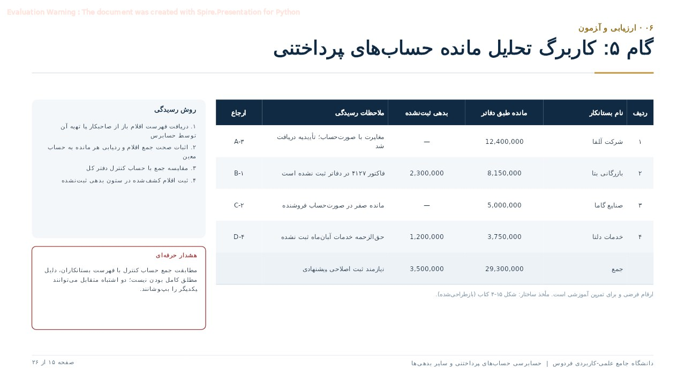
یادداشت ارائهدهنده
■ پیام کلیدی اسلاید این نخستین کاربرگ عملی ارائه است: ستونهای آن نشان میدهد حسابرس چگونه از «مانده دفاتر» به «بدهی قابل ارائه» میرسد. ■ توضیح شفاهی پیشنهادی «گام پنجم کتاب، تراز آزمایشی حسابهای پرداختنی است. دو هدف دارد: اثبات اینکه جمع ماندههای تفصیلی با حساب کنترل مطابقت دارد، و ایجاد نقطه شروعی برای انتخاب اقلام. حسابرس ممکن است از فهرست اقلام باز صاحبکار استفاده کند یا خودش آن را تهیه کند. در این کاربرگ، ستون آخر به کاربرگهای تفصیلی ارجاع میدهد؛ همان چیزی که در پرونده حسابرسی واقعی میبینید.» ■ نکته عددی اعداد را با هم جمع کنید: ۱۲٫۴ + ۸٫۱۵ + ۵ + ۳٫۷۵ = ۲۹٫۳ میلیون ریال؛ و بدهیهای ثبتنشده ۲٫۳ + ۱٫۲ = ۳٫۵ میلیون ریال. مجموع بدهی اصلاحشده ۳۲٫۸ میلیون ریال میشود. ■ هشدار کتاب این جمله را عیناً تأکید کنید: «مطابقت جمع حساب کنترل بستانکاران با فهرست جمع اقلام، به هیچوجه دلیل کامل بودن بدهیها نیست؛ زیرا امکان دارد یک فاکتور در دفتر معین ثبت شده باشد ولی در دفتر کل انتقال نیافته باشد یا برعکس، و دو اشتباه یکدیگر را پوشش دهند.» این نکته، پل ورود به بحث بدهیهای ثبتنشده است. ■ پیوند با بخش دوم «در بخش دوم، گام ششم (سندرسی)، هفتم (مغایرتگیری صورتحساب)، هشتم (تأییدیه) و دهم (جستوجوی بدهی ثبتنشده) را با مثال عددی کامل میکنیم.»